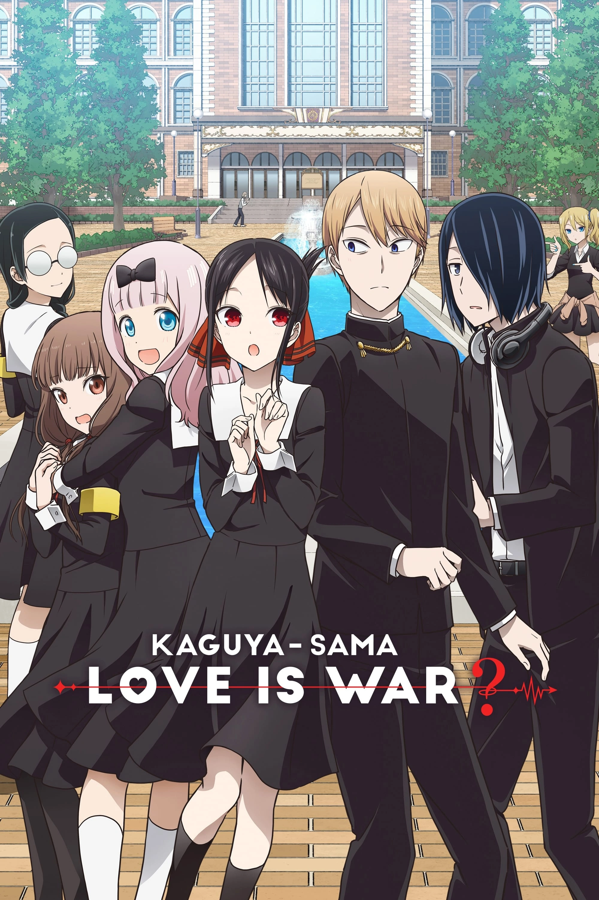
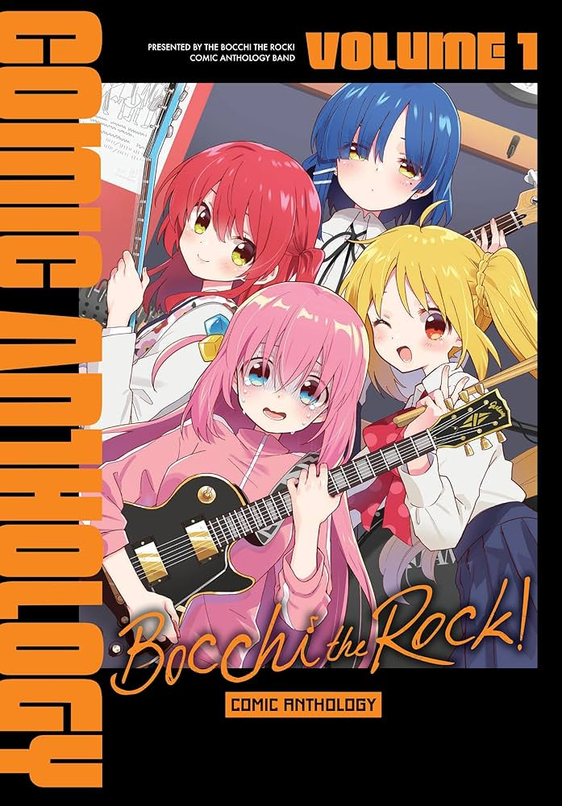
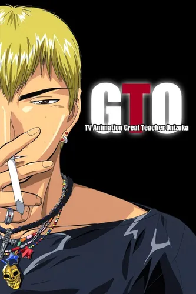
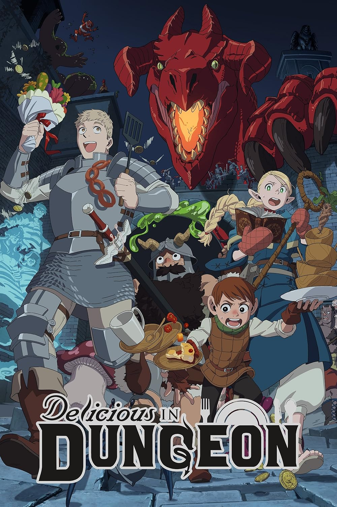
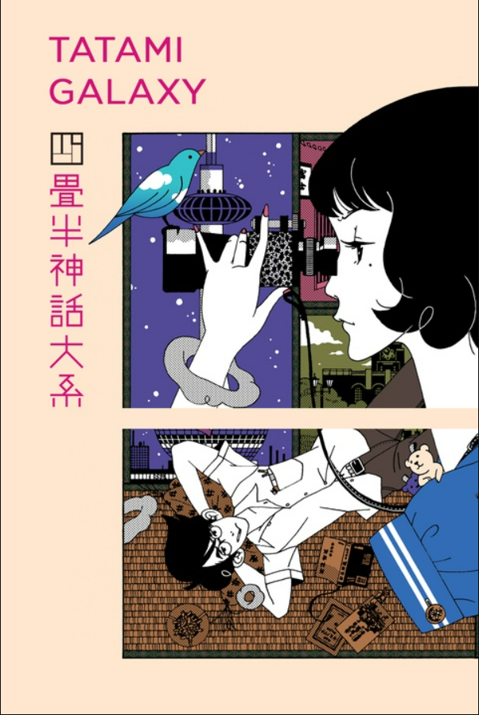
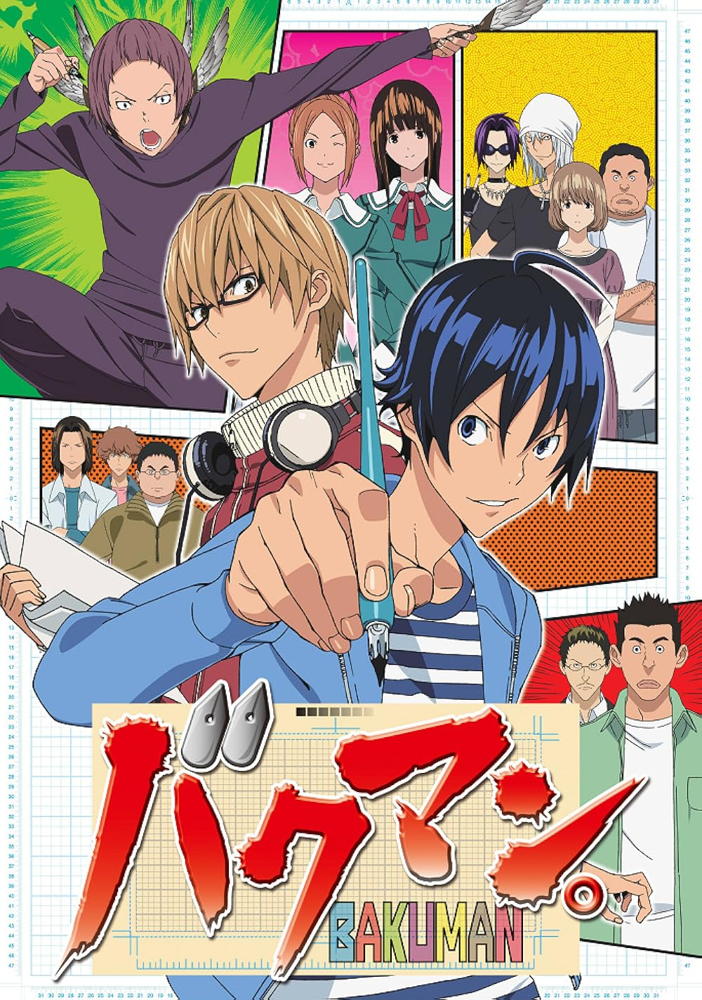

O gênero comédia nos animes tem como principal objetivo entreter e provocar risadas, utilizando situações engraçadas,
personagens excêntricos e um forte apelo ao humor visual e exagerado. Diferente de muitas comédias ocidentais, os animes
exploram expressões intensas, acontecimentos absurdos e o inesperado como principais fontes de humor, além de
frequentemente incluírem paródias e referências à cultura pop japonesa.
Além disso, a comédia costuma aparecer misturada com outros gêneros, como ação, romance e fantasia, ajudando a equilibrar
momentos sérios com leveza. Existem diferentes estilos, como o humor absurdo, a comédia de personagens e a comédia do
cotidiano, o que torna o gênero versátil e dinâmico, indo além do riso ao também contribuir para o desenvolvimento da
história e dos personagens.

Gintama se passa em uma versão alternativa do Japão feudal, onde alienígenas conhecidos como Amanto
invadiram a Terra e passaram a dominar o país, proibindo o uso de espadas e mudando completamente a sociedade dos samurais.
A história acompanha Gintoki Sakata, um samurai preguiçoso e irreverente que trabalha fazendo serviços aleatórios para
sobreviver. Ao seu lado estão Shinpachi Shimura, um jovem responsável e sensato, e Kagura, uma garota de força sobre-humana.
Juntos, eles formam o grupo Yorozuya, aceitando qualquer tipo de trabalho — desde tarefas simples até missões perigosas.
Embora a maior parte da série seja marcada por humor absurdo, paródias e situações caóticas, Gintama também surpreende com
arcos sérios e emocionantes, revelando o passado dos personagens e conflitos intensos que colocam suas vidas à prova.

Kaguya-sama: Love is War se passa em uma prestigiada escola e acompanha a rivalidade romântica entre Kaguya Shinomiya e
Miyuki Shirogane, dois estudantes extremamente inteligentes e orgulhosos que fazem parte do conselho estudantil.
Apesar de estarem claramente apaixonados um pelo outro, nenhum dos dois quer admitir seus sentimentos primeiro, pois
acreditam que isso significaria “perder” na relação. Assim, cada episódio se transforma em uma verdadeira batalha
psicológica, onde ambos criam planos elaborados para fazer o outro confessar.
Ao lado deles estão personagens marcantes como Chika Fujiwara, que frequentemente causa caos com sua personalidade
imprevisível, tornando as situações ainda mais absurdas e divertidas.

Owarimonogatari é parte da série Monogatari e foca nos mistérios finais envolvendo Koyomi Araragi, um estudante que já
enfrentou diversas entidades sobrenaturais ao longo de sua vida.
Na história, Araragi se vê envolvido com Ougi Oshino, uma figura enigmática que o conduz a investigações aparentemente
simples, mas que rapidamente se transformam em reflexões profundas sobre seu passado, suas escolhas e sua própria identidade.
Cada caso revela conexões ocultas com eventos anteriores, trazendo à tona verdades que ele preferia ignorar.
Com diálogos intensos e uma narrativa não linear, o anime mergulha no psicológico dos personagens, explorando mistérios que
vão além do sobrenatural e entram no campo da autocrítica e da percepção de si mesmo.

Mob Psycho 100 acompanha a vida de Shigeo Kageyama, conhecido como “Mob”, um garoto aparentemente comum, mas que possui
poderes psíquicos extremamente poderosos. Apesar disso, ele tenta viver de forma simples e controlar suas emoções, já que
seus poderes ficam mais fortes conforme seus sentimentos se intensificam.
Mob trabalha como assistente de Reigen Arataka, um autoproclamado médium que, na verdade, não possui poderes, mas usa
carisma e inteligência para resolver problemas sobrenaturais — muitas vezes contando com as habilidades de Mob.
Ao longo da história, Mob enfrenta espíritos malignos, outros espers e seus próprios conflitos internos, buscando amadurecer
emocionalmente e encontrar seu lugar no mundo. Conforme suas emoções se acumulam, ele se aproxima de atingir o “100%”, momento
em que seus poderes se manifestam de forma avassaladora.

Bocchi the Rock! acompanha Hitori Gotoh, uma garota extremamente tímida e socialmente ansiosa que sonha em se tornar uma
grande guitarrista e ter amigos. Apesar de seu talento com o instrumento, sua dificuldade em se comunicar a impede de se
conectar com outras pessoas.
Sua vida começa a mudar quando ela conhece Nijika Ijichi, que a convida para entrar em uma banda. Ao lado de novas
companheiras, como Ryo Yamada e Ikuyo Kita, Bocchi passa a enfrentar desafios tanto no palco quanto em sua vida pessoal.
Entre apresentações, ensaios e situações hilárias causadas por sua ansiedade extrema, ela vai, aos poucos, saindo de sua
zona de conforto e aprendendo a se expressar.

Boku no Kokoro no Yabai Yatsu acompanha Kyotaro Ichikawa, um estudante introvertido e com pensamentos sombrios, que
acredita ser alguém “perigoso” e deslocado do resto da turma. Em sua imaginação exagerada, ele chega a fantasiar situações
violentas, especialmente envolvendo colegas de classe.
No entanto, tudo começa a mudar quando ele passa a observar mais de perto Anna Yamada, uma garota popular, alegre e
aparentemente perfeita. Ao conviver com ela no dia a dia, Ichikawa percebe lados inesperados de sua personalidade — e, aos
poucos, seus sentimentos começam a se transformar.
Entre momentos constrangedores, situações engraçadas e interações sinceras, a relação dos dois evolui de forma natural,
mostrando o crescimento emocional de Ichikawa e sua saída gradual do isolamento.

Great Teacher Onizuka acompanha Eikichi Onizuka, um ex-delinquente e líder de gangue que decide se tornar professor — não
exatamente por vocação, mas com o objetivo inicial de ter uma vida fácil e até conquistar garotas.
No entanto, ao conseguir um emprego em uma escola, Onizuka recebe uma das turmas mais problemáticas, composta por alunos
rebeldes e desconfiados de professores. Usando métodos nada convencionais, muitas vezes exagerados e até absurdos, ele começa
a enfrentar os problemas pessoais de cada estudante, indo além do ensino tradicional.
Ao longo da história, sua atitude sincera e sua disposição para se envolver de verdade na vida dos alunos acabam
conquistando a confiança da turma, ajudando-os a lidar com traumas, bullying e dificuldades emocionais.

Dungeon Meshi (Delicious in Dungeon) acompanha Laios, um aventureiro que, após falhar em uma missão e perder sua irmã para
um dragão, decide retornar à masmorra para salvá-la. No entanto, sem recursos financeiros para comprar suprimentos, ele e seu
grupo precisam encontrar uma solução inusitada para sobreviver.
É então que surge a ideia peculiar: cozinhar e comer os próprios monstros da dungeon. Ao lado de seus companheiros — incluindo
o habilidoso cozinheiro anão Senshi — o grupo passa a explorar os andares da masmorra enquanto prepara pratos usando criaturas
que derrotam pelo caminho.
Entre batalhas, receitas detalhadas e situações cômicas, a jornada mistura sobrevivência, fantasia e gastronomia de forma
única. Ao mesmo tempo, o grupo segue avançando com o objetivo de resgatar a irmã de Laios antes que seja tarde demais.

Yojouhan Shinwa Taikei (The Tatami Galaxy) acompanha um estudante universitário sem nome — frequentemente chamado apenas de
“Watashi” — que entra na faculdade sonhando em viver uma vida perfeita, cheia de amizades, romance e experiências ideais.
No entanto, a cada escolha que faz ao entrar em diferentes clubes, sua vida acaba tomando rumos inesperados e frequentemente
decepcionantes, muito por influência de Ozu, um colega excêntrico que sempre o arrasta para situações caóticas. Ao mesmo
tempo, ele mantém uma relação intrigante com Akashi, que representa uma possível conexão genuína em meio ao caos.
A narrativa apresenta múltiplas versões da vida universitária do protagonista, explorando diferentes caminhos e
consequências, sempre com um estilo visual único e diálogos rápidos.

Bakuman acompanha Moritaka Mashiro, um estudante talentoso em desenho que inicialmente não tem grandes ambições, e Akito
Takagi, um colega inteligente e determinado que sonha em se tornar roteirista de mangá. Juntos, eles formam uma dupla com o
objetivo de entrar no competitivo mundo da publicação e conquistar sucesso na famosa revista Shonen Jump.
Motivado também por uma promessa romântica com Miho Azuki, Mashiro decide se dedicar completamente à carreira de mangaká. A
partir daí, os dois enfrentam prazos apertados, concorrência intensa e os desafios criativos de criar histórias que agradem
ao público e aos editores.
Ao longo da jornada, eles conhecem outros artistas, rivais e profissionais da indústria, aprendendo sobre o funcionamento do
mercado editorial e evoluindo tanto como criadores quanto como pessoas.